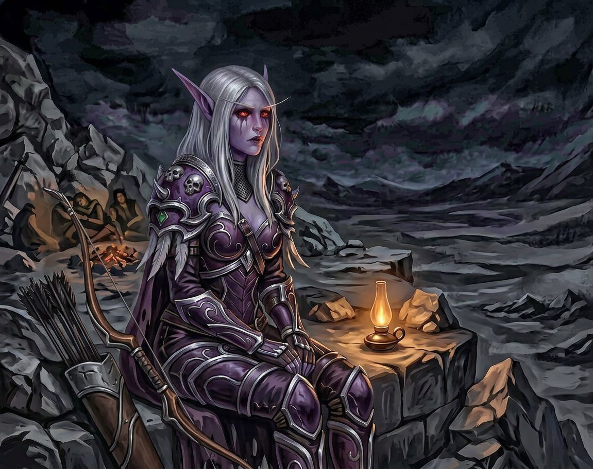

Extra
O que ela não diz
Ela conta tudo.
Essa é a verdade que ninguém sabe sobre Sylvanas Windrunner — não porque ela esconda, mas porque ninguém nunca perguntou do jeito certo. Ela conta tudo. Cada segundo, cada passo, cada respiração, cada variação de meio grau na temperatura do ar. Conta porque é o que o cérebro dela faz — não por escolha, não por hábito, mas porque é a arquitetura da mente dela, do mesmo jeito que o coração bate sem pedir permissão e os pulmões expandem sem consultar o dono.
Ela conta os passos de Varokh quando ele faz vigia (quarenta e dois passos até a pedra, pausa de onze segundos, quarenta e dois passos de volta). Conta as facas que Elyra produz (seis por semana, em média, com desvio padrão de uma e meia). Conta as flechas que dispara (duzentas e quarenta e sete desde que chegou à Gorja, cento e oitenta e três letais, sessenta e quatro de aviso). Conta os silêncios de Nathan (em média quarenta e dois por dia, dos quais vinte e sete são silêncios de processamento, nove são silêncios de desconforto, quatro são silêncios de humor, e dois são silêncios que ela ainda não classificou).
Ela conta porque contar é a única forma que ela tem de existir num mundo que não deveria existir.
✦
A noite está quieta.
Varokh dorme — ela sabe porque a respiração dele mudou de padrão há exatamente dezesseis minutos, ficando mais lenta e mais profunda, com intervalos de quatro vírgula dois segundos entre cada inspiração. Elyra dorme — ela sabe porque parou de se mexer há vinte e três minutos e a última coisa que murmurou antes de apagar foi alguma coisa sobre facas, o que é normal para Elyra. Nathan dorme — ela sabe porque a prótese dele parou de emitir aquele zumbido quase imperceptível que só ela consegue ouvir, aquele que vem do Vazio e que pulsa na mesma frequência dos sigilos da porta.
E ela está acordada.
Sempre está.
Não por insônia — banshees não têm insônia. Não por dever — ela cumpriu o dever há muito tempo, quando ainda existia um dever para cumprir. Está acordada porque dormir é uma coisa que ela faz quando escolhe, e nesta noite, ela não escolheu.
Porque nesta noite, ela está pensando.
✦
Quando Nathan chegou, ela contou.
Não os segundos — não imediatamente. Primeiro contou os passos (sete, antes de cair). Depois contou as respirações (três por minuto, rápido demais, pânico). Depois contou os batimentos (estimados, pela pulsação visível no pescoço: cento e quarenta por minuto, o que significava medo, o que significava que ele estava vivo, o que significava que era mais um).
Mais um.
Ela tinha visto muitos chegarem à Gorja. Nos primeiros anos — se anos significava alguma coisa naquele lugar — ela tinha tentado ajudar. Tinha guiado, protegido, ensinado a sobreviver. E tinha visto cada um deles desistir, ou ser consumido, ou simplesmente desaparecer na névoa como se nunca tivesse existido.
Depois do vigésimo terceiro, ela parou de tentar.
Depois do quadragésimo sétimo, parou de contar os nomes.
Depois do nonagésimo primeiro, parou de olhar nos olhos.
E então chegou Nathan.
✦
O que ela não disse — o que ela nunca disse a ninguém, nem a Varokh, nem a Elyra, nem ao próprio Nathan — foi que a primeira coisa que ela notou nele não foi o medo, nem a confusão, nem o corpo humano frágil que não deveria sobreviver uma hora na Gorja.
Foi que ele olhou para cima.
Ninguém olha para cima na Gorja. Não existe cima na Gorja — não existe céu, não existe sol, não existe nada acima além de cinza uniforme e infinito. E mesmo assim, a primeira coisa que Nathan fez quando abriu os olhos foi olhar para cima, como se esperasse encontrar alguma coisa ali. Como se o corpo dele soubesse que deveria existir um céu, mesmo quando não existia.
E isso — aquele gesto absurdo, impossível, completamente irracional de olhar para cima num lugar onde não existe cima — foi a coisa mais humana que ela tinha visto em séculos.
Ela contou aquele olhar. Guardou. E não esqueceu.
✦
Nos primeiros dias, ela o observou do jeito que observava todos — com distância, com cálculo, com a paciência fria de quem já tinha visto tudo aquilo antes e sabia como terminava. Contou os passos dele. Contou as vezes que ele tropeçou (sete no primeiro dia, quatro no segundo, uma no terceiro — curva de aprendizado rápida).
Mas havia algo diferente nele. Algo que ela demorou para classificar.
Ele não olhava para ela do jeito que os outros olhavam. Os outros olhavam com medo, ou com desconfiança, ou com aquela reverência que os mortos-vivos costumam provocar nos vivos quando são poderosos o bastante. Nathan olhava para ela com reconhecimento.
Ela demorou três dias para entender o que aquilo significava. Três dias inteiros, o que para ela era uma eternidade — porque a mente dela classificava tudo em segundos, e algo que levava três dias para ser classificado era algo que não tinha categoria pronta.
No terceiro dia, ele arregaçou a manga.
E ela viu.
O rosto dela. No braço dele. Tatuado em preto e cinza, com uma paciência e um cuidado que nenhum trabalho apressado produziria. O capuz caído sobre a testa, o olhar levemente baixo, a boca naquela linha que ela conhecia melhor do que qualquer outra coisa no mundo — porque era a boca que ela via toda vez que olhava para um reflexo.
Ela contou os segundos que levou para processar aquilo.
Quatro.
Quatro segundos para a mente mais rápida da Gorja processar uma coisa que não deveria existir. E mesmo depois de processar, não entendeu.
✦
A explicação veio depois. Veio em pedaços, do jeito que as coisas impossíveis sempre vêm — não de uma vez, mas em fragmentos que o cérebro vai juntando até que a imagem inteira faça sentido.
Ele era de outro mundo.
Não Azeroth. Não a Gorja. Outro mundo. Um mundo onde Azeroth existia dentro de uma máquina. Dentro de um jogo. E nesse jogo, nesse mundo, ela existia — não como ela era agora, não como ela tinha sido, mas como uma história. Uma personagem. Uma coisa que as pessoas conheciam pelo nome.
E Nathan — esse humano de pijama e meia imunda que pesava oitenta quilos e não tinha arma e não tinha armadura — tinha carregado o rosto dela no braço por quatro anos. Antes de saber que ela era real. Antes de saber que existia um lugar onde ela respirava (ou o equivalente a respirar, para uma banshee). Antes de tudo.
Ele tinha escolhido carregar o rosto dela. Sem saber.
E quando ele disse o nome dela — não perguntou, disse — com aquela pronúncia de um mundo que ela nunca ia ver, com aquele sotaque que ela não conhecia, com uma familiaridade que não deveria existir entre duas pessoas que acabaram de se encontrar, alguma coisa dentro dela que estava trancada há muito tempo se mexeu.
Só um pouco. Só o bastante para ela notar.
E depois trancou de novo.
✦
Os três metros não foram escolha.
Foram cálculo. Três metros é a distância ideal para proteção — perto o bastante para intervir em zero vírgula quatro segundos (estimado), longe o bastante para não criar a ilusão de proximidade que leva ao descuido. É a distância de um guarda-costas, de um vigia, de alguém que está ali por função e não por sentimento.
Ela manteve os três metros por meses. Por um ano. Por mais.
E contou cada segundo em que quis diminuir.
Setecentos e quarenta e dois segundos no primeiro mês. Mil e duzentos e dezesseis no segundo. Dois mil e oitenta e três no terceiro. A curva era ascendente e ela sabia o que isso significava — sabia do mesmo jeito que sabia que flechas voam em parábola e que lâminas cortam melhor num ângulo de vinte e três graus — e mesmo assim não fez nada a respeito, porque não fazer nada era o que ela tinha escolhido fazer desde Quel'Thalas.
Desde que o mundo acabou.
Desde que ela morreu.
✦
Quando Nathan desapareceu na fenda, ela contou os dias.
Não porque tivesse escolhido contar. Porque não conseguiu parar.
Um. Dois. Três. Quatro. Cinco. E a cada dia que passava, a Gorja ficava mais cinza e o silêncio ficava mais pesado e ela ficava mais quieta — não porque estivesse triste, ela disse a si mesma, mas porque estivesse calculando, porque a mente dela não sabia fazer outra coisa senão contar, e se estava contando, estava contando os dias desde que ele tinha ido embora.
Trinta. Sessenta. Noventa. E Varokh olhava para ela daquele jeito — o jeito de quem sabe mas não diz — e Elyra falava demais, o que significava que Elyra estava preocupada, o que significava que Elyra tinha notado, o que significava que ela estava sendo transparente, e Sylvanas Windrunner não era transparente.
Mas era.
Cem. Duzentos. Trezentos. E ela procurava. Todos os dias, em todas as direções, com a disciplina de quem faz uma coisa não porque acredita que vai funcionar, mas porque parar é o mesmo que aceitar, e ela não aceitava. Não isso. Não mais um.
Trezentos e sessenta e um.
Quando ela encontrou Nathan — quando ele voltou, com chifres e asas e uma mão de metal e olhos que agora eram azuis em vez de castanhos — a primeira coisa que ela sentiu não foi alívio. Não foi alegria. Não foi nenhuma das coisas que os vivos sentem quando reencontram alguém.
Foi raiva.
Raiva porque ele tinha ido. Raiva porque ele tinha voltado diferente. Raiva porque ela tinha contado trezentos e sessenta e um dias e aquilo significava alguma coisa que ela não queria que significasse.
E depois da raiva — um segundo depois, talvez dois — veio a outra coisa.
A coisa que ela trancou.
De novo.
✦
Os três passos.
Quando ela reduziu a distância de três metros para três passos, não foi uma decisão consciente. Não foi estratégia. Não foi cálculo. Foi o corpo — esse corpo morto-vivo que não deveria ter vontade própria — fazendo uma coisa que a mente não autorizou.
Três passos.

A distância de quem está perto porque quer.
E quando ele perguntou "por que três passos?", ela disse a verdade. A primeira verdade desprotegida que ela tinha dito em séculos:
"Para estar perto."
E quando ele perguntou "perto de quem?", ela disse a segunda:
"De você."
E o mundo não acabou. A Gorja não se moveu. O cinza continuou cinza e o zumbido continuou zumbindo e nada mudou.
Exceto tudo.
✦
Às vezes, nas vigílias da madrugada, ela pensa em Quel'Thalas.
Não nas ruínas — nas ruínas ela pensa sempre, aquilo é automático, é o fundo de tela permanente da mente dela. Pensa na Quel'Thalas de antes. No sol dourado batendo nas torres brancas. No cheiro de flor de lua nas manhãs de verão. No som das harpas nos salões de Silvermoon, e na voz da mãe cantando, e na risada de Vereesa correndo pelo jardim, e no peso da flecha na mão antes de disparar — aquele peso exato, perfeito, que significava eu estou viva e estou inteira e o mundo faz sentido.
Ela conta essas memórias também. Uma por uma. Como quem conta estrelas num céu que não existe mais.
E agora — agora, nesta noite, nesta Gorja, com Nathan dormindo a três passos e Varokh roncando baixo e Elyra murmurando sobre facas — ela tem uma memória nova para contar.
Não de sol dourado ou torres brancas. De uma lamparina alaranjada. De uma mão de metal segurando a dela no escuro. De olhos azuis que um dia foram castanhos e que olhavam para ela como se ela fosse uma coisa preciosa num lugar onde não deveria existir nada precioso.
De um humano que carregou o rosto dela no braço por quatro anos sem saber que ela era real. E que quando descobriu que era, não ficou com medo. Não ficou fascinado. Só ficou feliz. Do jeito simples e devastador de quem reencontra algo que não sabia que tinha perdido.
Ela conta essa memória.
Uma vez. Duas. Três.
E pela primeira vez em séculos, Sylvanas Windrunner — Rainha Banshee, General das Sombras, a mulher que conta tudo — decide não contar mais.
Só sentir.
✦
O capuz caiu de novo.
Ela não puxou de volta.